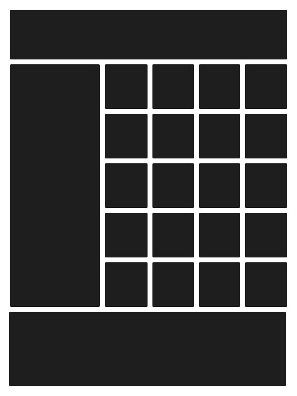
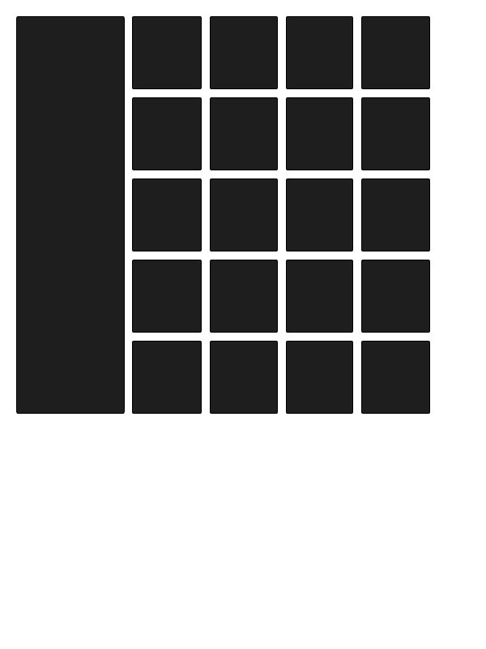
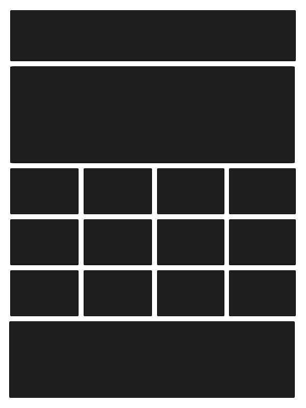

Form & Grid Systems
When we talk about "form" on the web, we are usually referring to the <form> HTML tag, which makes awesome interactive forms like this:
In print design, form is an essential concept, referring to the shape and color of any object in a design. On the web it is rare that we see sites with minimal forms. Usually there is a lot of information on any given page, arranged in images, text and interactions. In some early Internet art we see playing with form. But most of the time we're looking at stuff like this:

Or this:

Lots of information and links to more information--form is not the focus. The classics of print design tend to focus more on form:

One place we see attention to form is in splash pages. Splash pages used to be very popular, but now are relatively uncommon. We have become so used to the web being fast that we don't have patience for a nicely designed splash page, or anything that stands between us and information. This becomes a choice as designers, the classic compromise between form and function. Splash pages actually originated in video games--they were the art that was on screen at the beginning while the game was loading. It was used in a similar way with early websites. Video games got the idea from comic books, where a splash page refers to a page that contains one full work of art, instead of many panels. They are often the feature of a comic book.
Apple typically has a pretty nice splash page for the home page of their site.
Typecode has a nice interactive splash page with a prominent logo.
Splash pages have sort of been adapted into general web designs.
Depending on the functionality and purpose of the site, you may see more creative use of space and form. Dropbox has a really nice simple landing page that uses form well:
In design, the "format" is the margins of the page that hold a design. A grid system is the measurements that are used to align and size objects within the format. There is no wrong way to set up a grid, but there are types of grids that are commonly used. Grids are often created in Photoshop or Illustrator but are actually easier to make with CSS and HTML because we are limited to numbers.
- Manuscript grid:
- Column grid:
- Modular grid:
There are many different combinations and ways to use a grid. Combinations of grid, using each box as way to place elements on the page.
All websites are working with at least a manuscript grid. Sites with a lot of information like ESPN or New York Times tend to use column grids. Sites for designers and artists might prefer a modular grid. You will often see a combination of grids on one page. The important work for a grid is to make the hierarchy of information clear to the viewer.
Some popular web layouts:

- 
- 
- 